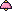
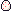
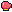
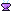

PokéSurvivor held items
During a run you can find held items: bosses and legendaries always drop one, and they also come from chests and the Munchlax event. You hold one at a time, two with the Second item upgrade and three with Third item. If you find another with your slots full, you choose which one to swap. They last for the whole run. With the Starting item upgrade you begin with the one you choose: they're sold in the Kecleon Shop for 500 (except the ones that give experience).
Held items
 LeftoversYou recover 1.5% of your HP per second.
LeftoversYou recover 1.5% of your HP per second. Choice Band+40% damage, but you can't switch moves.
Choice Band+40% damage, but you can't switch moves.- Quick Claw-20% cooldown on all your moves.
- Focus SashA hit that would knock you out leaves you at 1 HP (every 60 s).

Shell BellYou heal from the damage you deal. Amulet Coin+50% PokéCoins at the end of the run.
Amulet Coin+50% PokéCoins at the end of the run.
Lucky Egg+30% experience. Life Orb+30% damage, but each attack costs a little HP.
Life Orb+30% damage, but each attack costs a little HP. Choice Scarf+35% speed.
Choice Scarf+35% speed. Rocky HelmetFoes that hit you in melee take damage.
Rocky HelmetFoes that hit you in melee take damage.- Assault Vest+20% damage reduction.
- Heavy-Duty BootsTraps don't affect you, lava doesn't burn you and water doesn't slow you down.
- MetronomeEvery 3 s in a row with the same move: +6% damage, up to +48%. Lost when you switch moves.
 Mirror HerbAltar powers last twice as long for you.
Mirror HerbAltar powers last twice as long for you. Covert CloakEnemies that heal or shield can't help the ones near you.
Covert CloakEnemies that heal or shield can't help the ones near you.
Punching Glove+30% damage with physical contact moves.- Super PadsAttacks marked on the ground deal 30% less damage to you.
 Throat Spray+25% Special Attack for 8 s when you switch moves (at most every 12 s).
Throat Spray+25% Special Attack for 8 s when you switch moves (at most every 12 s). Loaded DiceMoves with several projectiles or hits fire one more.
Loaded DiceMoves with several projectiles or hits fire one more.- Safety GogglesWeather never weakens or slows you (it can still boost you).
- Exp. Charm+20% experience and +10% PokéCoins.
- Luck Incense+60% PokéCoins, but −15% damage.

Rare IncenseWild shinies appear twice as often (in a group, if the host carries it).- Radar GogglesA minimap in the top right showing what's nearby: bosses, shinies, chests, altars, springs, items and the rift.
Single-use items
They come as rewards and take no slot: Exp. Candy and Mochis are used when picked up; berries are kept (one of each) and used on their own when needed.
- Exp. CandyYou level up right away.
- Sitrus BerryWhen you drop below 25% HP, it heals you 30%.
- Atania BerryWhen you drop below 25% HP, +30% damage for 10 s.
- Meloc BerryIf something slows you, it clears it and makes you immune to slowdowns for 5 s.
- Health Mochi+5% max HP until the run ends.
- Muscle Mochi+5% damage until the run ends.
- Swift Mochi+5% speed until the run ends.
- Resist MochiYou take 5% less damage until the run ends.
Orbs
Like in Mystery Dungeon: up to 4 at a time, used with keys 5-8 (or by tapping them) and they only last for the run.
- Slumber OrbPuts the enemies on screen to sleep for 4 s (bosses, 1 s).
- Slow OrbEnemies on screen move 50% slower for 8 s (bosses, 20%).
- Blowback OrbBlows nearby enemies far away (bosses, half as far).
- Focus Orb+25% critical chance for 15 s, for you and nearby teammates.
- Luminous OrbYou see more of the map (the camera zooms out) for 15 s, you and nearby teammates.
- Quick Orb+40% speed for 10 s, for you and nearby teammates.